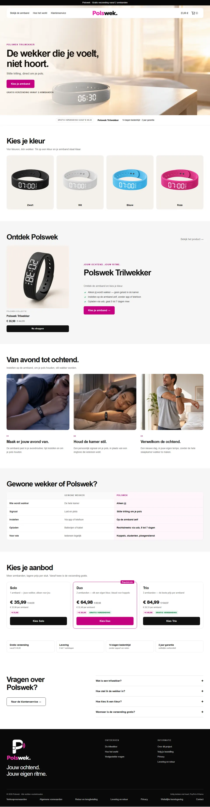
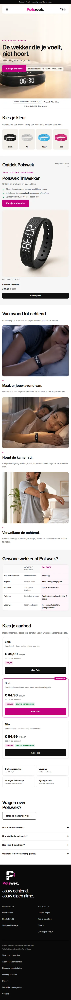
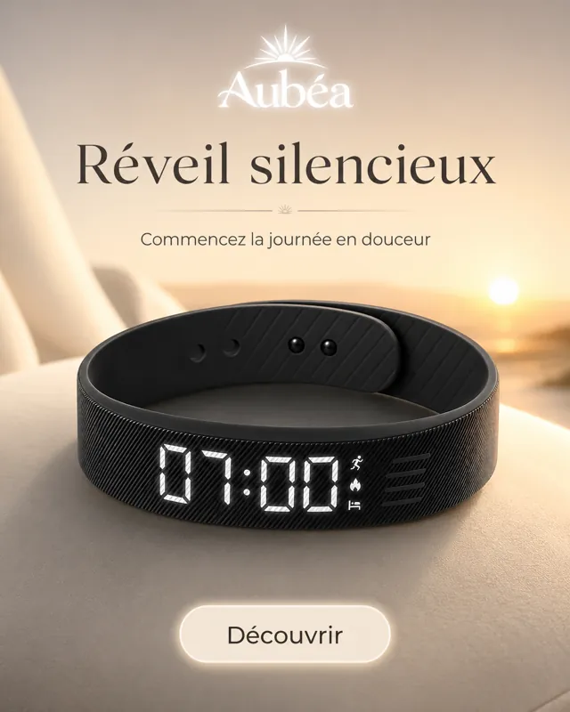
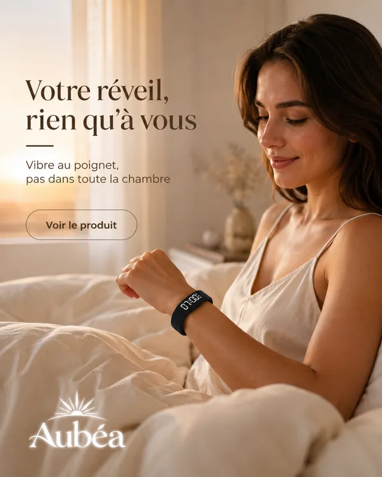
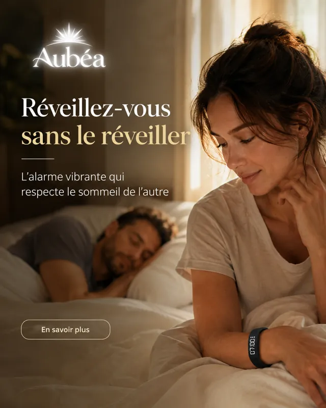
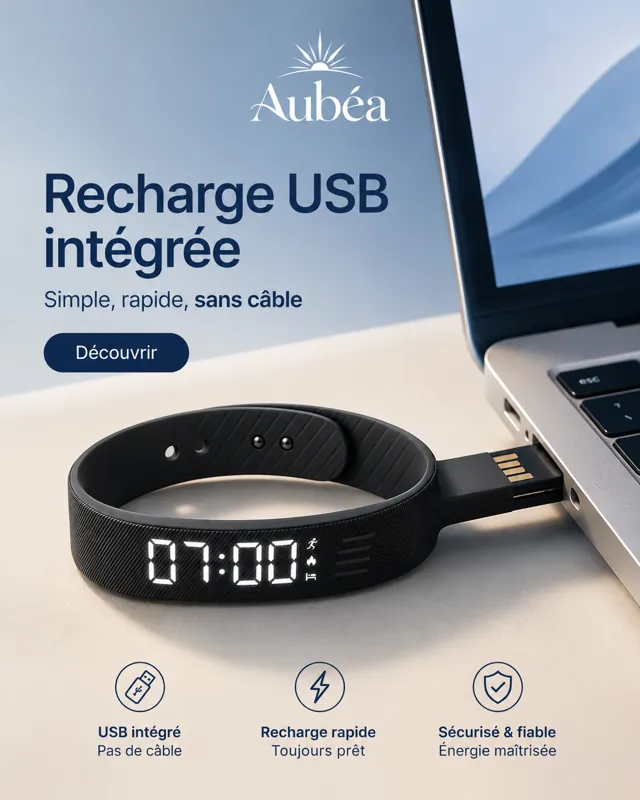
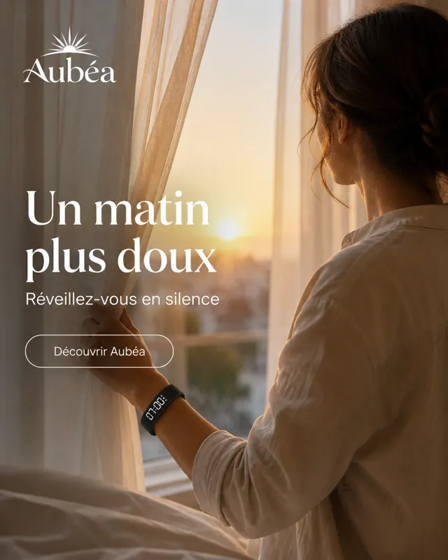
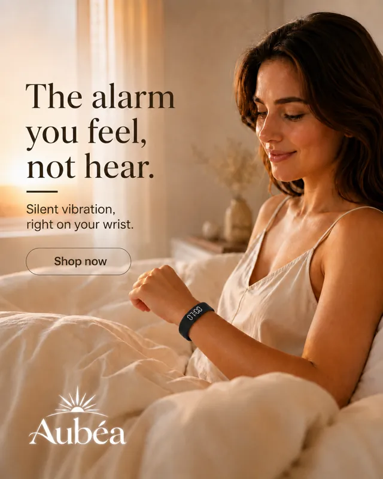

Projet personnel, e-commerce en dropshipping
Faire coder une boutique par des agents IA, sans perdre la main
Depuis août 2026, je lance des boutiques Shopify en dropshipping. Le code des thèmes est écrit par des agents IA et les visuels par des modèles d'image. Mon travail : fixer ce qui doit être fait, vérifier ce qui part en ligne, et exploiter les boutiques.
Contexte et objectif
Je voulais tester des produits sur de petits marchés européens, vite, et dans une langue que je ne parle pas toujours. Les agents IA écrivent un thème complet en quelques heures ; le risque est de ne plus savoir ce qui est en ligne, ni comment revenir en arrière. L'objectif était donc double : aller vite, et garder le contrôle de chaque modification publiée.
Déléguer l'écriture, pas la mise en ligne
J'ai fixé des règles de travail aux agents, écrites dans les notes du projet :
- Aucune mise en ligne sans mon accord, et un fichier à la fois, pour ne jamais écraser les réglages de la boutique.
- Un point de restauration avant de toucher au thème en ligne : copie complète du thème (627 fichiers sur la boutique du bracelet), puis un journal avant/après par fichier, avec la commande de retour arrière.
- Rien de non public dans les fichiers servis : sauvegardes et notes sont rangées hors du thème.
- Identifiants, coordonnées bancaires et identité : moi seul. L'agent n'en saisit jamais.
Concrètement, côté terminal :
# avant chaque lot : copie du thème en ligne
shopify theme pull --theme <id-du-thème>
# après mon accord : un seul fichier, jamais les réglages
shopify theme push --theme <id-du-thème> --only sections/faq.liquidCe que la recette a attrapé
Les corrections ont été codées par l'agent et validées par moi sur le site en ligne. Certains défauts viennent de mes propres tests, d'autres des audits menés avant l'ouverture.
- Des images cassées sur la version néerlandaise. L'outil de traduction traduisait aussi les noms de fichiers rangés dans des réglages de texte : une image appelée « step » devenait « stap », et n'existait plus. Ces réglages sont devenus des listes non traduisibles, et la règle est écrite : un réglage qui contient un nom de fichier n'est jamais un champ libre.
- Un retour forcé vers l'anglais. En testant, j'ai constaté que choisir le néerlandais ne changeait rien : la détection automatique de langue renvoyait vers l'anglais juste après le choix. Correction : une langue explicitement présente dans l'adresse n'est jamais remplacée.
- Un panier qui rechargeait la page. Changer la couleur d'un article déclenchait une erreur serveur (400), puis un rechargement complet. L'appel visait la variante au lieu de la ligne du panier ; il est corrigé, et le panier se met à jour sans recharger.
- Des données personnelles dans une page légale. La politique de confidentialité automatique réinjectait une adresse e-mail et une adresse postale personnelles à chaque enregistrement. Elle est passée en version rédigée, sans données personnelles.
La boutique du bracelet, en immersion
Faites défiler la page d'accueil comme un visiteur, sur ordinateur et sur téléphone. Version néerlandaise en ligne, thème publié le 20 septembre 2026 ; la section des avis a été retirée de la capture.


Les vidéos
Générées par IA (Higgsfield) sous ma direction, puis montées, au format story. Elles se lancent sans le son quand elles apparaissent ; le bouton les met en pause. Je ne montre que des plans produit et des mises en scène : aucune vidéo ne prétend être un avis de client.
-
Le réveil silencieuxBracelet-réveil -
Sans réveiller l'autreBracelet-réveil -
Chacun son rythmeBracelet-réveil -
La gammeBracelet-réveil -
Le produit en studioBracelet-réveil -
Coloris sur fond noirBracelet-réveil -
L'heure en hologrammeBracelet-réveil -
Une lettre, un prénomCollier à initiale -
Le collier portéCollier à initiale -
La ceinture en studioCeinture d'électrostimulation (boutique non lancée)
Les visuels du bracelet
Pour la première marque du bracelet, Aubéa : une série d'images générées avec ChatGPT sous ma direction, dans une palette chaude et calme, accordée au produit. En français, puis en anglais pour les marchés irlandais et néerlandais.
-

Réveil silencieux -

Rien qu'à vous -

Sans réveiller l'autre -

Recharge USB -

Un matin plus doux -

Version anglaise
La campagne danoise
Pour la boutique de sacs de lavage, j'ai dirigé une série de visuels générés avec GPT Image (via Higgsfield) : un même système, décliné en fil d'actualité et en story. Prix réels, livraison offerte réelle, aucun avis ni témoignage ; les scènes avant/après sont signalées comme illustratives. Touchez une publicité pour lire sa traduction.
-
Mode d'emploi en trois gestes
-
Le produit en gros plan
-
L'offre à l'unité
-
Le choix des couleurs
-
Avant, après (scène illustrative)
-
L'usage, en machine
Je ne montre ici que des concepts originaux. Aucun chiffre de performance publicitaire n'a été relevé ; je n'en avance donc aucun.
Résultats vérifiables
- ComptéLighthouse mobile, 3 septembre 2026, boutique du bracelet : accessibilité 100, SEO 100, performance entre 52 et 76 en laboratoire.
- ComptéAudit avant ouverture : 29 adresses contrôlées (réponses 200, 301 et 404 attendues), 293 ressources chargées sur trois pages sans une seule erreur 404, aucun script tiers.
- ConstatéDomaine, paiements et version anglaise et néerlandaise en ligne début septembre 2026.
- ConstatéPremière commande réelle et payée le 22 septembre 2026 pour la boutique de sacs de lavage ; une première commande aussi pour celle du bracelet.
Ce que j'en retiens
Faire écrire le code par un agent ne supprime pas le travail, il le déplace : moins de frappe, davantage de spécification, de vérification et de traçabilité. C'est la leçon de mon stage, appliquée à un autre terrain : le temps gagné à l'écriture se réinvestit dans la recette.
J'en garde aussi une règle très concrète : un outil automatique traite tout ce qu'on lui confie, y compris ce qui n'aurait jamais dû passer par lui. Les noms de fichiers traduits l'ont montré.